General Information
This branded website is publicly available at rock-radar.github.io/
This website was created by:
- Manel Chihi (231652)
- Lise van Hal (232399)
- Serra Mertens (232663)
- Natalie Polderman (232970)
Content
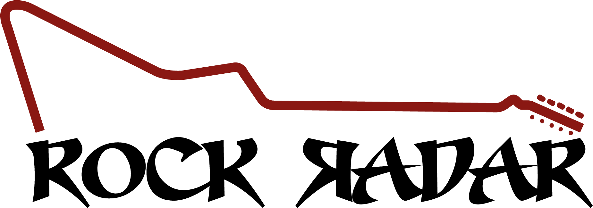Brand Vision
In a world where hard rock fans are hard to find, we believe in putting them on the radar and creating a home where they truly belong. Because staying connected makes the experience even louder.
Brand values, each accompanied by a piece of compelling copy
Connection -Rock Radar embraces a sense of connection, bringing together a community of passionate rock fans who live for the energy and the authenticity of the scene. We bring people closer to the music and closer to each other, amplifying the bond that makes hard rock a way of life.
Passion - It's often said that hard rock is a lifestyle. It means that fans form an identity around the music, it is a way of expressing oneself. Hard rock music has a lot of energy, the rush of the electric guitar, and the adrenaline of live concerts. Rock radar wants to keep this passion and energy alive through our platform.
Comfort - Many rock fans, especially those who don’t have like-minded people in their immediate surroundings, seek a place where they can feel understood and accepted. Rock Radar creates a comforting digital space where they can feel at home within the online presence of other fans.
Nostalgia - The golden age of hard rock, it’s a memory and a connection to something bigger. From discovering your favorite band to seeing them for the first time in concert, hard rock fans enjoy the nostalgia while staying connected to the present. Rock Radar keeps this nostalgia alive by bringing fans together and connecting over the music that has shaped them and make them proud to be a hard rock fan.
Brand Persona
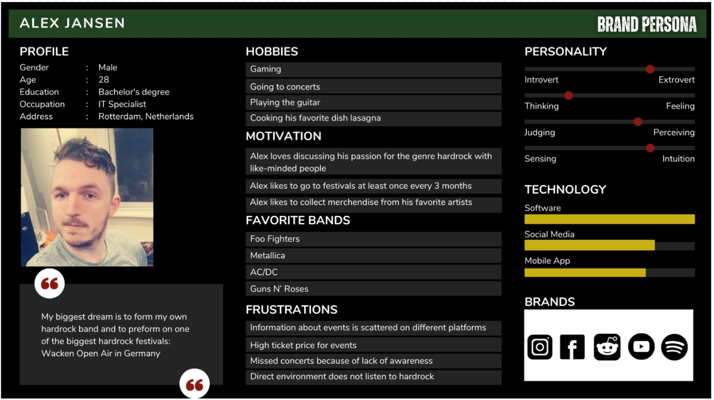Production
Design Elements
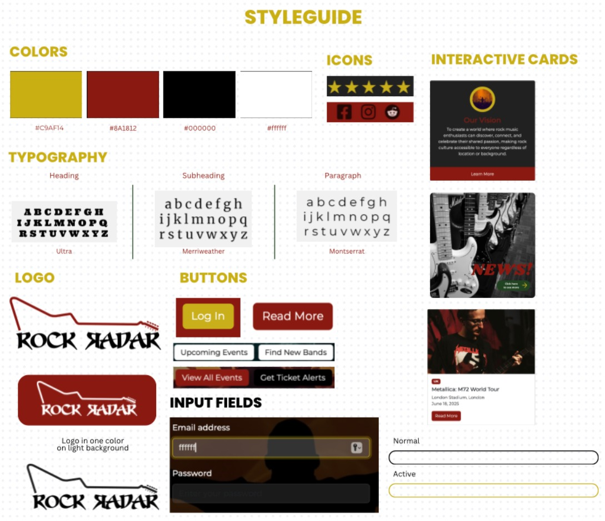Logo
The Rock Radar logo uses a bold, sharp-edged font that seamlessly fits within the ambience of hard rock. Those angular edges in the font serve as a reminder of how hard rock music feels: strong and edgy.
Color Palette
#000000 Black is the color of power. A color that has long been associated with hard rock’s visual identity. It symbolizes strength, mystery, and a sense of belonging (Color Meanings, z.d.-b). For fans who may feel out of place elsewhere, black creates a safe digital space that mirrors the look and feel of the culture they love. It's a familiar backdrop where they can feel understood, accepted, and part of something real.
#8A1812 Deep Red represents energy, emotion, and urgency, all core psychological traits of red (Color Meanings, z.d.-b). It aligns directly with the passion of hard rock: the adrenaline of live shows, the intensity of sound, and the expressive identity of its fans. This color drives engagement and reflects the emotional connection users have with the genre and the community.
#C9AF14 Gold Yellow reflects happiness and optimism. Psychologically, yellow is tied to legacy and excellence (Color Meanings, z.d.-b). In the hard rock context, it evokes the nostalgia of classic eras, gold records, and iconic moments. It supports Rock Radar’s mission to honor the history of the genre while fostering pride among the older fans.
#FFFFFF White is associated with simplicity and perfection. It ensures legibility and supports clean, accessible design (Color Meanings, z.d.-b). Functionally, white balances the intensity of the darker tones and emotionally reinforces the brand’s focus on connection, creating a space where fans can clearly communicate, share, and belong.
Photography Style
Our photos are all high-contrast and dramatic looking with:
- Concert scenes with cool lighting
- Fans connecting with each other
- Musicians performing
- Either black and white photos or ones with heavy color treatment in the color of our brand
This photography style connects to our brand values about "Connection" and "Passion" by showing the energy and community of rock culture.
Typography
For Rock Radar fonts, we use these bold, heavy fonts for headlines that serve as attention grabbers. The smaller text is easier to read but still has some character to it, so it balances out being expressive but still functional.
The Seven Swordsmen font in the Rock Radar logo is very aligned with the fonts used in hard rock. Its outreach and edges perfectly fits within the edgy tunes that hard rock is known for.
The Ultra font is seen throughout the website. It is bold and thick, which exudes the same boldness of the hard rock drums.
Merriwether and Montserrat are the fonts where the information is conveyed. For this reason, it needs to appear calm and clean.
Credits
- We used the template that was provided to us: buas-media-interactive/prj4-group-template
- We used bootstrap for some UX patterns getbootstrap.com/docs
- When we needed help with some codes we used Claude.AI
- All our images are retrieved from: Pixabay, Pexels, Pinterest
- All typography are retrieved from Google Fonts: Ultra, Merriweather, Montserrat
Testing Report
We conducted usability testing with four participants from our target audience, people suitable for testing. Our goals were to evaluate whether users understand the website’s purpose and identity upon their first visit. But also to see how users navigate core features, and reveal any usability blockers or confusing elements.
Participants
We had 4 participants aged 18-30, we divided this into two people that fit our brand persona. And two outsiders to get a broader view of the functionality of our website. All participants engage with band content and frequently stream or discuss music. The first participant was Greta(20)- Student at Breda university, likes to listen to music. She does not necessarily listen to hard rock. However she is suitable for testing as she knows where to look for and how to be critical towards the website. The second participant is Micky (18) a student at BUas, who goes to festivals frequently. She has a passion for music and likes to stay up to date of new music and events. She uses TikTok and Instagram frequently. The third participant was Lani(21), she is a student at Breda university of applied sciences. She is a Hard rock fan, listens to the music and from time to time goes to a concert. Our last participant was Elena(22), she is also a student at BUAS, she is not a hard rock fan. She does have a passion for music and dance.
Testing tasks
All participants were asked to complete the following tasks:
By looking at the homepage and without clicking to any other pages, can you try to describe as best as you can what you think this site is about?
Can you please log in to your account on this website?
So after you login into your account, you would like to find new hard rock fans to connect with, where would you go to find that connection?
Imagine you’re trying to discover new upcoming hard rock bands or look for exclusive music content. Where would you go?
Can you act like you are part of a new hard rock band and you would like to be promoted. How would you get in touch with Rock radar to be featured on the website
Can you try to find out what the mission of Rock Radar is? So after discovering the website, can you now again describe as best as you can what you think this website is about?
These tasks represent key user journeys, it will test if information is findable, if it's user friendly and it will reflect what the participants think the website’s goal is.
Additional questions after testing:
Was there anything different about the site than what you expected based on your first impression?
On a scale from 1–5, how easy was it to find what you needed?
What would have made it a 5? Were there any parts of the website where you expected to click something or go somewhere, but it wasn’t clear how?
Marketing
Context of campaign and promotional activities
Target Audience
Our target audience consists of hard rock fans aged 18-60 who actively follow bands, attend concerts and engage with rock culture. We target music enthusiasts who value self-expression, boldness and the feeling of community. Our Brand persona you can find underneath; Historically, the hard rock audience has been dominated by male and white as well as age is skewed a little older. Nowadays this has broadened its horizon, turning into younger audiences as well (Henry, 2012). There is also a difference within the community. Casual fans are attracted by outdoor concerts and festivals, where the overall atmosphere of the experience is very important. Loyal fans are more prone to bundled or packaged events with other relevant bands or experiences. And then we have the die hard fans who are tempted by VIP packages.
Platform Usage
Hard rock fans interact with their favorite musicians through social media. We see that hard rock bands mostly use platforms like Facebook, Twitter, and Instagram to share updates, tour dates, and behind the scenes content. So these platforms are mostly used to search and receive news (W.A, 2024). Also platforms such as dedicated forums or Reddit are popular among the community for discussion, sharing experiences, or brand related content. These platforms foster a sense of community and here they communicate and try to connect with others (Culture Case, n.d.). As to listening behaviors in hard rock fans, it shows that they use a mix of traditional and modern channels. Radio playing is an important part in listening as well as cd’s.
Content Preferences
Fans show that they have a strong interest in exclusive content such as behind the scene footage, interviews with artists or bands, and live performance recording. They appreciate authenticity and value direct interactions with artists. There is also a strong engagement in online communities. Fans actively participate by sharing opinions on music quality, concert experiences, and personal stories related to their favorite bands.
Communication objectives
Reach
Our campaign will target a multi-platform approach to maximize audience reach:
- Instagram: 25 people through targeted posts and stories
- Reddit: 250 people via relevant hard rock community forums and threads
- Facebook: 1,200 people through dedicated hard rock groups and fan pages
This gives us a total potential reach of approximately 1,475 people who will see our message. We've established these targets based on Henry's (2012) demographic research on hard rock audiences and platform usage patterns among music fans.
Affect
Our campaign aims to create new connections between hard rock fans by creating a sense of community. We want hard rock fans to feel comfortable and have fun conversations with like minded people. According to Baym (2018), music communities thrive on shared experiences and exclusive content, which we'll leverage to create this emotional connection.
Response
We expect our audience to:
- Be aware of our brand across platforms
- Visit and register on our website
- Spread word-of-mouth about Rock Radar within their own hard rock communities
This response aligns with findings from Salo et al. (2013) that music fans actively share positive experiences with their peers when they feel part of an authentic community. We want to create that community for them.
Platforms
Based on our research into hard rock fan behaviors (W & W, 2024; Culture.Case, n.d.), we've selected the following platforms:
- Instagram: For visual storytelling and brand promotion
- Facebook: For community building in established hard rock groups and broader reach
- Reddit: For in-depth discussions, community engagement, and connecting with dedicated hard rock enthusiasts
According to Lingel and Naaman (2012), selecting platforms where audiences already gather is crucial for community-based marketing campaigns, which is why we chose Facebook, Instagram, and Reddit based on our research showing these are key channels for hard rock fans.
Campaign
What is the campaign about? Our campaign will create excitement, connection and sense of coming home. The campaign is centered around creating as much brand awareness as possible. Our campaign has two big components; platform integration, we want to establish a strong presence in Facebook groups, Reddit and Instagram to send out updates and engage with the community. And community building, to show that the brand connects our fans immediately, strengthen user engagement and the sense of community.
What is the message?
The message we want to convey with this campaign is that we can bring together hard rock fans, especially if you don’t really have someone in your environment. Because staying connected makes the experience louder.
Objective described in smart method
Our campaign objectives follow the SMART methodology to make sure our goals are clear and measurable:
Specific: Launch the Rock Radar website with community-focused posts that bring hard rock fans together while creating our brand presence on Instagram, Facebook, and Reddit.
Measurable: Reach 1,475 people through our platforms (25 on Instagram, 250 on Reddit, and 1,200 on Facebook) during our 4-week campaign from March 14 to April 11, 2025.
Achievable: We've set realistic reach numbers based on typical engagement rates for hard rock fans and chosen platforms where our target audience spends their time.
Relevant: Our campaign addresses the need for connection within the hard rock community, creating online opportunities for fans to engage with each other and our brand.
Time-bound: The campaign has a clear timeline, starting March 14 and ending with our website launch on April 11, giving us 4 weeks to build excitement. Successfully launch the Rock Radar website by fostering a strong online community of hard rock fans through engaging content on Instagram, Facebook, and Reddit. Achieve a total reach of 1,475 people during our 4-week campaign (March 14 – April 11, 2025) while establishing our brand presence and driving traffic to the website.
Planning/Timeline
Our campaign will follow a strategic 4-week timeline designed to build momentum. Our platforms are visitable through these links, there are screenshots from our pages underneath:
Weekly layout
Monday: Instagram & Facebook post 1 - Tuesday: Reddit post 1 - Wednesday: Instagram & Facebook post 2 - Thursday: Reddit Post 2 - Friday: Instagram & Facebook post 3
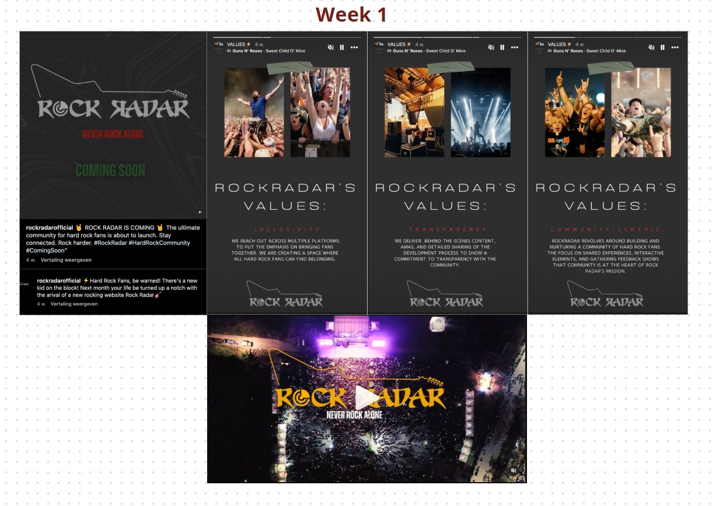After our first week of promotion and reflecting on it, we came to a few conclusions. We noticed that reddit was not the platform to necessarily post advertisements. We also noticed that posting about our website, launch event and brand was too much for a 4 week campaign. Based on these reflections we adapted our marketing objectives and planning. Our main focus will be to give away the look and feel of our brand and show people what Rock Radar stands for. We will also adapt our posts more on the platform. On reddit we will focus on starting conversation and connecting with hard rock fans.
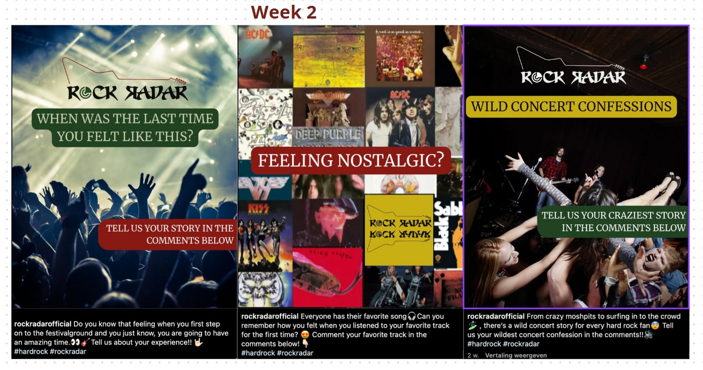Questions for reddit (Tue+Thu):
1. What’s the best hard rock experience you’ve ever had and who was there with you?
2. If you could bring back one hard rock legend for a final concert, who would it be?
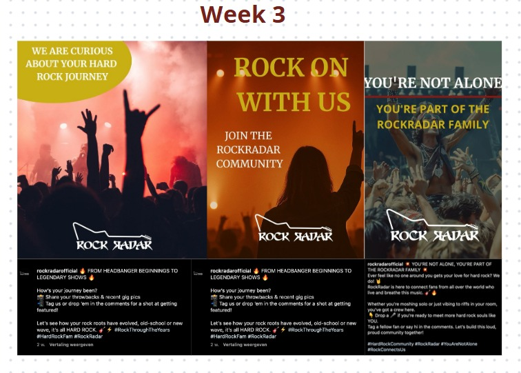Questions for reddit (Tue+Thu):
1. What’s an unknown or not so popular hard rock album you think deserves way more recognition, and why?
2. What’s the first hard rock song that really hooked you into the genre?
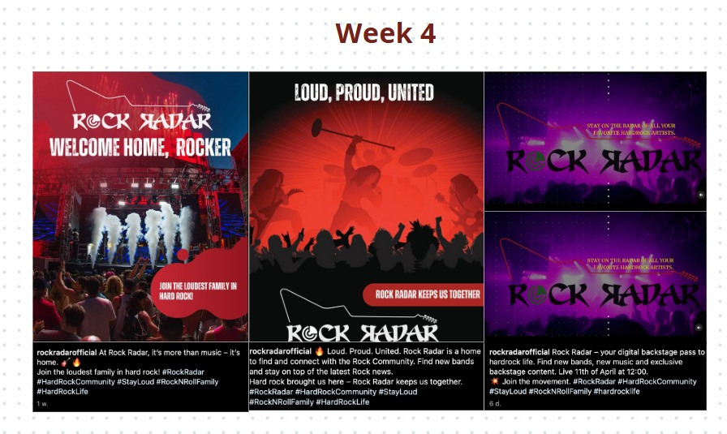Questions for reddit (Tue+Thu):
1. You can time travel to any hard rock gig in history – where are you going?
2. What hard rock album changed your life forever, and why?
Learning Points
Per platform we’ve analysed the interaction and reach of our posts.
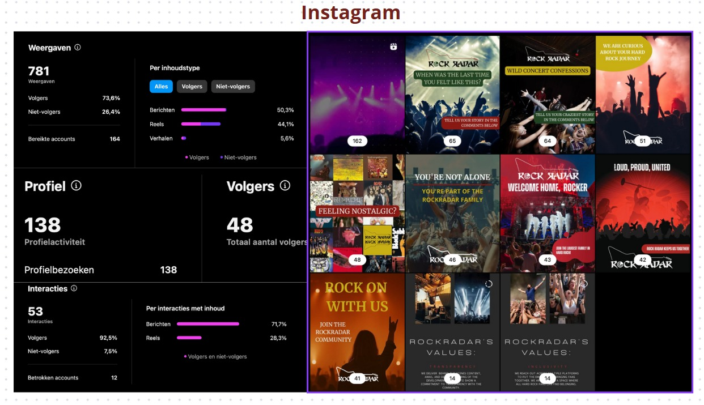 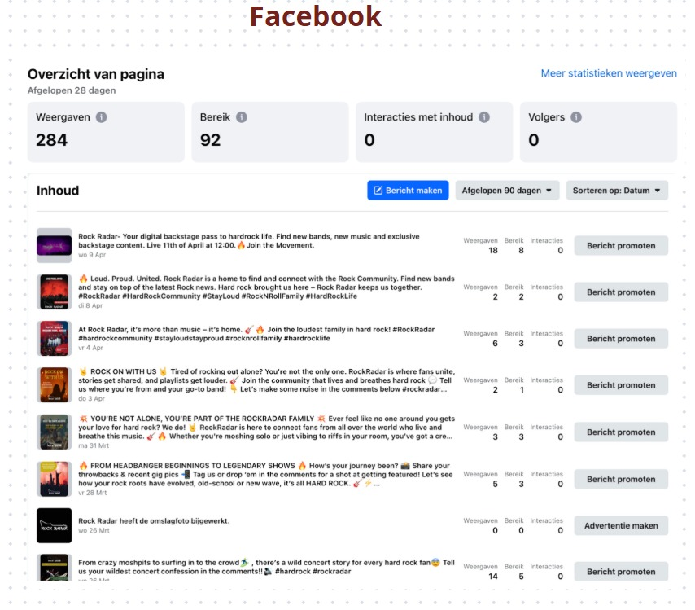 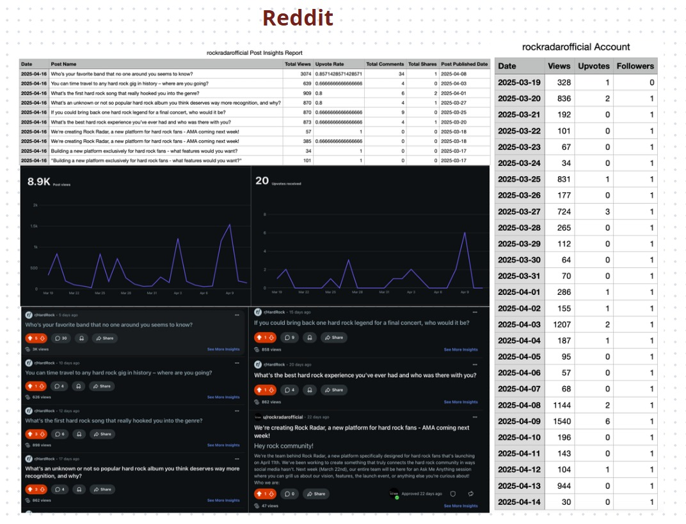After analysing these results we made a list with what worked well and what did not.
What worked well:
Reddit: With 8.9K views, Reddit surpassed our expectations and goal of 250 users for our reach objective.With 57 comments we can definitely say we succeeded in our affect objective. Through conversation starters and engaging, community-focused questions, we succeeded in sparking authentic dialogue among hard rock fans, showing that Rock Radar can connect hard rock fans. Our questions were based on nostalgia and connection, which also reflects upon our brand values.
Instagram: With a reach of 768 we successfully reached our objective of 25 people. Our posts showed visual consistency and it did show the voice and tone of our brand.
What did not work:
Facebook: Our goal to reach 1,200 people on Facebook was definitely not successful with a total reach of 271 people, this platform had the lowest engagement and traffic. Our tone did not translate well to Facebook groups, where promotional content is more easily dismissed.
Instagram: If we are being critical our content could be more variable and high quality. Our posts are all very much alike, as well as the message portrayed in every post. We could have varied more in making some reels as well. We could have used funny memes, or high quality reels to engage people more on instagram. Because although we did reach 596 platforms, we did not get much response from them. And therefore we did not fully succeed in our affect and response objective.
Reddit: We tried putting advertisement messages on reddit that promoted our brand and website specifically, this got flagged and taken down. That made it very clear that we needed to change our approach to reddit. Our new strategy worked very well, although since our website is not online, we can not fully say we directed people towards our website with the campaign.
Week 1: Halfway through our campaign we discovered that launching the brand, teasing the website, and announcing an event all at the same time diluted our message. We adjusted our campaign because this volume of promotional content was too much for a 4-week campaign with a new brand.
Future Planning
Based on what we learned, here's what we would do if the project continued:
Our future content would follow a 60/30/10 rule: 60% community-focused content (fan stories, band spotlights), 30% interactive content (polls, questions), and only 10% direct promotion. Baym (2018) shows that this balance better serves community building while maintaining brand visibility. Per platform;
We would continue sparking conversations on reddit, we’ve noticed the most interaction on this platform and it is a great community building for our brand. Although we would maybe also try to focus on directing people towards our brand and website. So instead of only sparking conversations with questions, we would post comments like; ''Which hard rock band has NEVER disappointed you? Also if you’re into discovering more of this kind of stuff, we’ve been cooking up some deep dives and underrated picks over at our site👉 rockradar.nl Let us know your pick below. We might feature it next…''
From now on, our website is live, that means that we would start promoting our website and our service more. Our marketing campaign for the past 4 weeks has been focused solely on promoting our brand look and feel and connecting with fans. Now is the time to show what Rock Radar can actually do for the community through our website. We have learned from the previous weeks that we don’t get a lot of interaction on instagram. That is why we would also focus on more variable content, focus on reals and use trends within the community to gain more viewers. For example reals or trends that are already getting views or likes. We could make a reel of side-by-side photos or videos of classic rockers in the '80s vs. today. A trend that goes well, and also this plates into our value nostalgia.
Facebook has given the least amount of interaction for us. Meaning we decrease our resources from this platform more to other platforms. Nonetheless contentwise just like instagram, we would focus more on promoting our website instead of our brand. We support focusing resources on platforms that generate higher quality engagement rather than just broader reach. Lastly, we would develop better ways to track not just reach but also engagement quality, sentiment, and community growth. Hanna et al. (2011) argue that engagement quality is a more meaningful standard than quantity for community-focused campaigns.
Management
We have created a Lean Canvas that will help us organise our business plan. We have two versions, which can be found in Appendix 1. and Appendix 2. The first Lean Canvas we made was based on what came out of our first set of problem interviews, the audio file can be found in Appendix 3. We started the process and quickly realised that our solution for them was too broad and highlighted too many aspects. This made us focus on 1 big problem, after this we had our solution interviews, the audio file can be found in Appendix 4. Based on the insights from these interviews we adjusted our Lean Canvas. Our final Lean Canvas can be seen below.
Final Lean Canvas
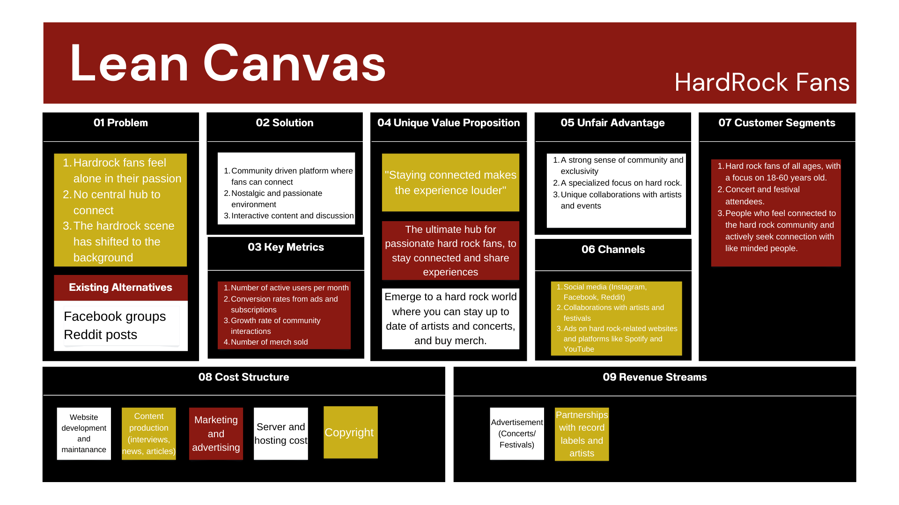Fill in at least 2 bullet points per building block and according to the rubrics.
Problem
In the first Lean Canvas there were multiple problems. Hard rock fans struggle to stay up to date with their favorite artists and events, information is scattered across different platforms and there is no central hub for a community and for them to make a connection. Currently there are so many different platforms on which you can find information. Facebook is a way for hard rock fans to connect in dedicated groups where they can share experiences and talk to each other, but you first have to get accepted into this group. Reddit is also a way to talk with like minded people in dedicated communities, but a lot of information gets lost and there is no structure. Next to that is Ticketmaster, where you can stay up to date about certain events, but we soon realised that if one would be a real hardrock fan they would know which events were happening.
In the second Lean Canvas we tried to focus more on 1 problem, because otherwise our platform would be a scattered place and it would be difficult to find information on our website too. After the interviews we noticed that the problem lies that fans feel alone in their passion. Where hard rock used to be accepted more socially, has nowadays shifted into not being the norm anymore. With the upcoming of many new genres the group of hard rock fans have shifted into a new genre and might not be as passionate about it as they used to be. While there is also no central hub for them to connect emotionally or socially, it gets more difficult to share that passion with others.
Changes and why is it better:
The original canvas focused mostly on logistical problems (news and updates) and focussed on too many problems at a time. The interviews revealed a deeper emotional issue which is that fans seek connection with like minded people, miss the nostalgia, and want to belong in a community.This change shifts the product's mission from being just a tool to being a community experience.The benefit from this is that there is a stronger emotional appeal which causes greater user engagement.
Solution
We noticed that it was difficult to realise a solution to all these problems and as mentioned above we wanted to focus mostly on one. In our first Lean Canvas the main focus was to provide as much information about everything. This meant real-time news and updates about events and artists. The website would provide exclusive interviews and new album releases. Additionally, there would be a place on the website where all concert and festival information would be found such as, time and date, line up, location etc. Lastly there would be community features such as forums and a platform where fans could connect with each other.
This was way too much to realise and to focus on so we decided to change the main focus of the website to a community-drive platform. From the interviews it was clear that this was the main problem that affected the most fans. In the second Lean Canvas our solution was also a nostalgic and passionate environment to bring back the ways how it used to be and let our users know that they can be proud of being a hardrock fan. We still decided to keep the interactive consent and discussion as this was preferred in our solution interviews too.
Changes and why is it better:
The old solution emphasized information above connection.The new one emphasizes emotional experience, shared memory, and fan bonding. Inspired by interviewees who expressed wanting to connect and share their passion on hard rock. The benefit from this is that it makes the platform more desired and encourages interaction between fans by sharing their experiences or memories, and then eventually can evolve into a culture.
Key Metrics
Our business model drives around the content we provide. Our content focuses on promoting new upcoming bands, our offering exclusive content to promote the bands and music displayed. New bands can contact us via our website. They pay an x amount of money to be displayed on our website. To track the performance of Rock Radar, we will focus on those two sides of our platform. The side of fans and bands. Meaning we will measure user engagement and artist acquisition.
User engagement. We will keep track off the number of registered users on our website (through profiles) How active users are per week, to get an indication of their engagement. Also the time that users spend on the site per session, are the users exploring our content?Artist acquisition. We would measure the number of bands that sign up for promotion on our website, this is our main revenue driver. We would measure satisfaction and trust through repeated promotions from the same bands. And combining this with feedback ratings from artists. The conversion rate from all the bands who contact us to exactly make a deal for paid promotion.
Changes and why is it better:
After more consideration and solution interviews we decided that the main need and enthusiasm of fans lay with music discovery and connection. That is why we decided to prioritize band promotion. This also reinforces our core brand identity. Adding merch too early could dilute our message and make it look like a fan-shop. Also from a financial point of view merchandise requires upfront investment in inventory and shipping logistics, which can be a bigger risk for a small startup.
Unique value proposition
In our first Lean Canvas our focus was on providing information. We created a slogan for this which was “Stay on the radar of all your favorite artists”. This slogan relates back to our brand ‘Rock Radar’ and has a hidden meaning of how one would use a radar to be aware of your surroundings. Our unique value proposition was that our website could provide a platform where all the information that was currently scattered on different platforms would be combined. But as mentioned above this business idea was too much to focus on so we narrowed it down to community building and connection.
This shift also is seen in our new slogan which is “Staying connected makes the experience even louder”. This slogan circles back to what we stand for to create a community where everyone can be proud of what they are passionate about, make new connections with like minded people and feel comfortable in this environment. It correlates to going to events together, or with people that share the same interest, would make the experience better (and therefore louder).
Our unique value proposition, which can be seen in complete in Appendix 5, is a community-driven platform for hard rock fans who feel disconnected and nostalgic for a time when their passion was more widely shared. Many fans today struggle to find like-minded people or stay connected to the scene through fragmented platforms. Rock Radar offers a centralized hub where fans can connect, share experiences, and discover new music through social interaction, event updates, and engaging content. It helps fans feel seen and understood, while giving bands a space to promote themselves to a dedicated audience. Our unique value lies in turning music discovery into a shared emotional experience, because staying connected makes the experience even louder!
Changes and why is it better:
From information-driven platform to community-driven platform. Interviews highlighted the power of connection and shared passion and this makes our users feel more connected to artists. The phrase “makes the experience louder” gives a strong emotive and brandable hook rather than the original “radar” metaphor. It aligns what our brand stands for directly into our name and mission. “Radar” still plays a subtle role in staying connected, but now the connection lies between people, their memories and their interests. While other brands such as Spotify and Ticketmaster focus on functionality and information, Rock Radar focuses on an emotional feeling. The benefit from this is that a stronger resonance causes a greater word of mouth and emotional attachment.
Unfair advantage
We didn’t pivot that much in our unfair advantage if we compared the Lean Canvases to each other. The one thing that is different is that in our first Lean Canvas one of our unfair advantages was that we provided early ticket access to those who were subscribed to our brand. However, this changed because as mentioned above this would focus our brand into a functional and informational website which didn’t align with our values. Next to that was concluded in some of our interviews that there were enough places where you could buy tickets, there was a need however for providing dates when certain events were.
So in our second Lean Canvas we adjusted this and now Rock Radar’s unfair advantage lies in its authentic community focus and deep emotional connection with a niche but passionate audience. Unlike general music platforms or forums, we create a safe, nostalgic space exclusively for hard rock fans to connect, share, and relive their love for the genre. Our community is built around identity and belonging, not just content.
We also offer direct visibility to emerging bands, connecting them with an engaged fanbase that actively seeks new music and wants to stay updated on certain events. This emotional loyalty, combined with a targeted and growing network, is difficult to replicate. Rock Radar isn’t just another platform but it’s a home where hard rock fans feel comfortable.
Changes and why is it better:
Removed merch and ticket sales to avoid becoming just another info hub and to stay focused on community-building. Shifted to an emotional and nostalgic connection as the core value, creating a deeper, more memorable user experience. Focused on fan-artist interaction, giving new bands a unique way to connect directly with passionate fans and vice versa. Built a strong brand identity around belonging and pride in being a hard rock fan which is not easily replicable by larger platforms. Simplified operations for a startup, making the platform easier to manage and grow without complex logistics such as ticket sales and merchandise.
Channels
Our channels have stayed the same in both Lean Canvases. Based on our interviews, we use a mix of digital and community-driven channels that align with their habits and preferences. Social media platforms, like Instagram, are key for sharing short-form content, nostalgic throwbacks, and fan-driven stories that spark engagement. These platforms also allow us to promote upcoming features, artist spotlights, and community discussions in a visual, relatable way.
Reddit and Facebook Groups serve as entry points to existing online communities where hard rock fans already gather. By participating in discussions, sharing valuable content, and inviting users to join Rock Radar, we build trust and organically attract interest.
By collaborating with artists and events, we can get promotion for our website and brand via their platforms and vice versa. This goes the same for music-driven platforms such as Spotify and Youtube. They can promote our brand via personalized ads and in return we can link their platforms on our website when new music has been released by artists.
Why it works:
Instagram engages fans with visual content, nostalgia, and stories. Reddit & Facebook Groups tap into existing hard rock communities for organic trust-building. By collaborating with artists & events we both get mutual promotion which expands both our reach to new users. By collaborating with music platforms such as Spotify and Youtube we get cross-promotion which drives traffic to our website and vice versa. Spreading our message on different platforms fosters word-of-mouth through fan-driven content.
Customer Segments
Our customer segments have stayed mostly the same. The brand RockRadar targets hard rock fans aged 18 to 60 who actively follow bands, attend concerts, and engage deeply with rock culture. This target group is based on the fact that the legal age to attend concerts is 18 and that people stop going to concerts at the age of 60. This target group values self-expression, boldness, and a strong sense of community. While the hard rock scene has traditionally been dominated by older white males, it is now expanding to include younger and more diverse fans (Henry, 2012). The target group exists of both males and females.
Changes and why it is better:
There is a slight shift from passive consumers to active community seekers. In the first Lean Canvas the focus was on people that actively seek new music and news and has now been shifted to people who actively seek connection with like-minded people. Interviewees described wanting to feel heard, not just watch and read.
Cost Structure
Initial Lean Canvas (Appendix 1)
Fixed costs:
Website and app development: €7,000-15,000 initial build, €1,000-2,500 monthly maintenance. Server and hosting costs: €300-800 monthly for scalable cloud infrastructure. Content production team: €2,000-4,000 monthly for writers and content creators. Copyright licensing: €500-1,500 monthly for music licensing on website content.
Variable costs:
Marketing and advertising: €500-1,500 monthly based on campaign intensity. Content production: €25-100 per piece (interviews, news articles, reviews). Community management: €15-25 per hour for moderation and engagement.
Final Lean Canvas (Appendix 2)
Fixed costs:
Website development and maintenance: €5,000-10,000 initial build, €800-1,800 monthly. Server and hosting costs: €200-600 monthly with optimized community features. Content production team: €1,500-3,000 monthly with focus on community content. Copyright licensing: €300-1,000 monthly for music-related content.
Variable costs:
Marketing and advertising: €400-1,200 monthly with emphasis on community building. Content production: €20-80 per community-focused piece. Community management: €20-30 per hour for deeper engagement facilitation. Comparison and Justification.
Key Differences:
Lowered Initial Investment: The final version has lower development costs as it focuses on community features rather than comprehensive information aggregation.Content Focus: Resources shifted from broad news coverage to targeted community-building content, reducing costs while increasing impact.Easier Data Management: The community-focused approach requires less complex data management, reducing server and maintenance costs.Efficient Marketing: Targeting a specific emotional need (connection) allows for more focused, cost-effective marketing compared to promoting a general information hub.
Why it works better:
Better Alignment with User Needs: Interview results showed users care more about connection than information, making this cost structure more effective at delivering actual value. Lower Entry Barrier: Reduced costs make launching the platform more feasible as a startup with limited resources. Sustainable Growth Model: Community-focused platforms can grow organically through word-of-mouth, reducing long-term marketing costs. Clear Value Proposition: The focused approach allows more resources to be dedicated to what truly matters to users, creating a stronger product-market fit.
Revenue Streams
Initial Lean Canvas (Appendix 1)
Primary Revenue: Advertisement: $0.50-1.50 CPM (Cost Per Mille (thousand users)) for banner ads from brands and festivals. Artist merchandise: 15-25% commission on band merch sold through platform. Ticket sales: 3-6% commission on concert tickets sold through platform. Partnerships with record labels and artists: $200-500 per promotional campaign.
Secondary Revenue: Premium subscriptions: Basic tier free, premium tier at $4.99/month for ad-free experience. Sponsored content: $150-300 per sponsored article or feature. Affiliate marketing: 5-10% commission on music gear and accessories.
Final Lean Canvas (Appendix 2)
Primary Revenue: Advertisement: $0.60-1.80 CPM with targeted ads for community-engaged users. Partnerships with record labels and artists: $300-700 per artist promotion campaign. Premium community features: $3.99/month for enhanced connection tools and exclusive content.
Secondary Revenue: Sponsored community events: $200-500 per digital artist meetup or AMA session. Targeted marketing opportunities: $250-450 for brands to engage with passionate community. Affiliate marketing: 8-12% commission on music gear recommended by community members.
Key differences
Removed Merchandise and Ticket Sales: The final version eliminates direct merchandise and ticket sales to focus on community-building revenue streams.
Enhanced Partnership Value: Artist partnerships now command higher rates due to more engaged, passionate community members.
Why it works better:
More Focused Business Model: Concentrating on fewer revenue streams allows for better execution and clearer value proposition. Lower Operational Complexity: Eliminating merchandise and ticket sales removes inventory, shipping, and customer service challenges. Better Alignment with User Needs: Revenue is now generated primarily from delivering the connection users crave, creating a stronger win-win relationship. Sustainable Growth Path: The community-focused model creates network effects - more users create more value, attracting more users and partners. Deeper Brand Relationships: Moving from transactional ticket/merch sales to community engagement creates more meaningful, valuable brand partnerships. Differentiated Market Position: The revenue model now emphasizes Rock Radar's unique value (community connection) rather than competing directly with established ticketing platforms. Community-Focused Premium Features: Revenue now derives from users willing to pay for deeper connection rather than simply removing ads. Higher Advertising Value: More targeted, engaged users allow for higher CPM rates despite potentially lower overall traffic.
Validation of Assumptions
Our initial assumption was that hard rock fans struggled mainly with staying up to date on their favorite artists, concerts, and releases. However, through our problem interviews, we discovered that the deeper issue wasn't information access but was the lack of meaningful connection. Many fans expressed feelings of isolation, stating that they rarely found others who shared their passion for hard rock in their immediate social circles. We noticed this shift through multiple insights such as, fans missed the sense of community, the nostalgia of shared experiences, and wanted a space to connect emotionally and socially, not just read updates. They were using platforms like Reddit and Facebook, but these felt fragmented, superficial, or unstructured.
In response, we pivoted our business model. Instead of building an informational hub, we focused on community-building and emotional engagement. Our platform evolved into a community-driven space where fans could share experiences, discover music together, and feel proud of their identity as hard rock lovers. This also meant simplifying our website, which is why we dropped complex features like merchandise and ticket sales and instead prioritized connection and artist-fan interaction. In our solution interviews, this shift was validated. Users resonated strongly with the emotional tone and concept of belonging. They appreciated the nostalgic environment, and the ability to connect with others beyond surface-level engagement. The feedback confirmed that we had addressed the real problem and that our solution delivered value in the way users truly needed.
Appendix
Please use the list below to provide links to evidence for all parts of your justication. Please double-check all links before delivering the website. Do not hesitate to refer to these numbers above.